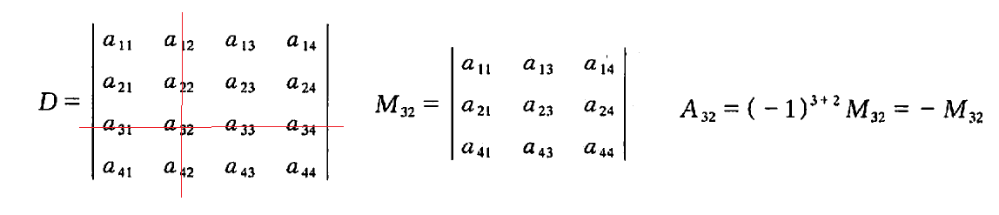
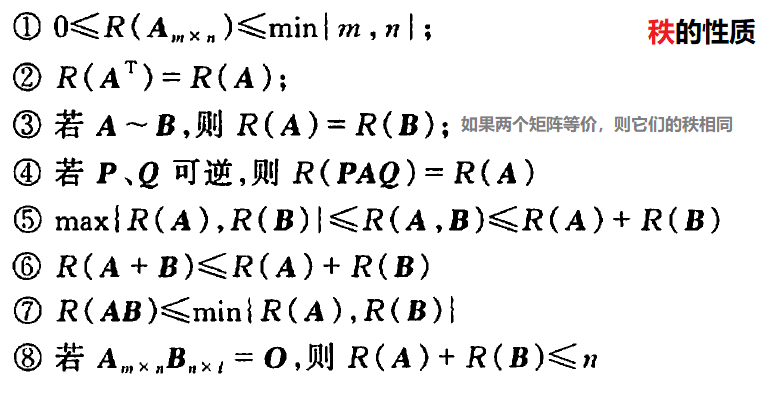
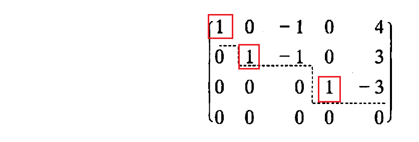
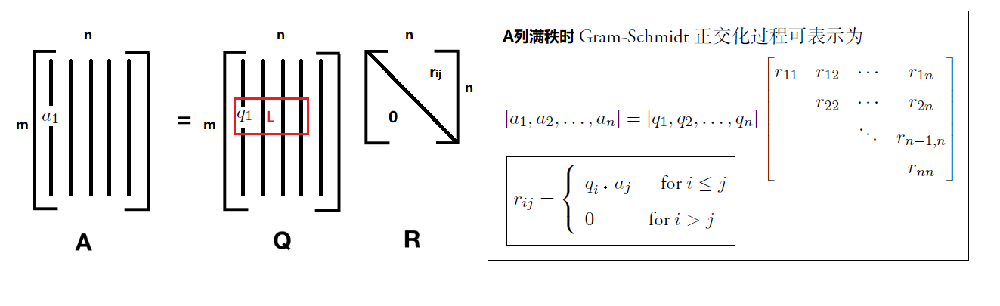

Linear Algebra
教材：《线性代数（同济）》，略去部分线性方程组的解
updates：写完笔记后发现了更清晰的课程 矩阵计算（潘建瑜），直接看它会更有帮助
Tips：一般矩阵右边乘的是列向量，左边乘的是行向量 （可能本笔记没有好好遵守。。。）
基本概念
- 先规定$n$个不同的元素之间的标准次序；在这$n$个元素的当前排列中，某一对元素的先后次序与标准次序不同，则构成1个逆序；当前排列中所有逆序的总数称为这个排列的逆序数
- e.g. 规定标准次序为: 123456..., 某一排列：321 的逆序数=0+1+2
- 逆序数为奇数的排列称为奇排列，需要进行奇数次元素对换才能变为标准排列（偶排列 同理）
行列式
$$D= \begin{vmatrix} a_{11} & a_{12} & \dots & a_{1n} \\ a_{21} & a_{22} & \dots & a_{2n} \\ \dots & \dots & \dots & \dots \\ a_{n1} & a_{n2} & \dots & a_{nn} \end{vmatrix}= k \begin{vmatrix} a_{11}/k & a_{12} & \dots & a_{1n} \\ a_{21}/k & a_{22} & \dots & a_{2n} \\ \dots & \dots & \dots & \dots \\ a_{n1}/k & a_{n2} & \dots & a_{nn} \end{vmatrix} $$
$$D= \begin{vmatrix} a+b & c+d \\ a_{21} & a_{22} \end{vmatrix}= \begin{vmatrix} a & c \\ a_{21} & a_{22} \end{vmatrix} + \begin{vmatrix} b & d \\ a_{21} & a_{22} \end{vmatrix}= \begin{vmatrix} a+b+a_{21} & c+d+a_{22} \\ a_{21} & a_{22} \end{vmatrix} $$
-
$n$阶行列式$D$中，每一个元素$a_{ij}$称为行列式的元
-
计算：$D=\sum(-1)^t a_{1p_1}a_{2p_2} \dots a_{np_n}$，其中$p_j$是列标序号，$t$是列标序号排列的逆序数
- e.g. 二阶行列式 = $(-1)^0a_{11}a_{22}+(-1)^1a_{12}a_{21}$；$p_j$排列分别为(12)、(21)
-
性质（345参考上方示例）
- 行列式$D$与它的转置行列式$D^T$相等
- 对换行列式的两行（列），行列式变号
- 推论：如果行列式有两行（列）完全相同，则此行列式=0
- 行列式某一行（列）的公因子可以提取到行列式记号外侧
- 若行列式某一行（列）的元素都是两数之和，则可以拆成两个行列式
- 将行列式某一行（列）乘以某一数后、按位置加到另一行（列）上，行列式不变
-
$(i,j)$元$a_{ij}$的余子式 $M_{ij}$ 是行列式消除$i$行、$j$列后的(n-1)阶行列式，代数余子式 $A_{ij}=(-1)^{i+j}M_{ij}$
- 
- 展开：行列式等于它的任一行（列）的各元素与其对应的代数余子式乘积之和
- $D=\sum\limits_{j=1}^na_{ij}A_{ij}$ 按第$i$行
- $D=\sum\limits_{i=1}^na_{ij}A_{ij}$ 按第$j$列
- 如果是第$i$行的元与第$k \neq i$行的代数余子式：$\sum\limits_{j=1}^na_{ij}A_{kj}=0$
矩阵
$$A_{m \times n}= \begin{bmatrix} a_{11} & a_{12} & \dots & a_{1n} \\ a_{21} & a_{22} & \dots & a_{2n} \\ \dots & \dots & \dots & \dots \\ a_{m1} & a_{m2} & \dots & a_{mn} \end{bmatrix} = \begin{bmatrix} B_{r \times c} & B_{r \times (n-c)} \\ B_{(m-r) \times c} & B_{(m-r) \times (n-c)} \end{bmatrix} $$
单位矩阵 $E$ 或者 $I= \begin{bmatrix} 1 & 0 & \dots \\ 0 & 1 & \dots \\ \dots & \dots & \dots \end{bmatrix}$ 零矩阵 $O= \begin{bmatrix} 0 & 0 & \dots \\ 0 & 0 & \dots \\ \dots & \dots & \dots \end{bmatrix} $
克拉默法则求解方程组
有$n$元线性方程组 $Ax=b$：若 $R(A) \lt R(A,b)$ 无解；若 $R(A)=R(A,b)=n$ 有唯一解；若 $R(A)=R(A,b) \lt n$ 有无穷多解 (特别的，$AX=0$有非零解的充分必要条件是$R(A) \lt n$) $$\begin{cases} a_{11}x_1 + a_{12}x_2 + \dots + a_{1n}x_n = b_1 \\\\ a_{21}x_1 + a_{22}x_2 + \dots + a_{2n}x_n = b_2 \\\\ \dots \\\\ a_{n1}x_1 + a_{n2}x_2 + \dots + a_{nn}x_n = b_n \end{cases} $$ 如果 $|A|= \begin{vmatrix} a_{11} & a_{12} & \dots & a_{1n} \\\\ a_{21} & a_{22} & \dots & a_{2n} \\\\ \dots & \dots & \dots & \dots \\\\ a_{n1} & a_{n2} & \dots & a_{nn} \end{vmatrix} \neq 0 $，则有唯一解 $x_i = \frac{|A_i|}{A}$，其中 $|A_i|$ 表示用 $[b_1,b_2,\dots,b_n]$ 取代$|A|$中第$|i|$列- $n$阶矩阵意味着 $n \times n$ 的方阵
- 元素都是实数的矩阵称为实矩阵，含复数的矩阵称为复矩阵
- 两个矩阵的行数、列数都相等，称为同型矩阵
- 对角矩阵 $\Lambda = diag(k_1,k_2,\dots,k_n) =
\begin{bmatrix}
k_1 & 0 & \dots& 0 \\
0 & k_2 & \dots& 0 \\
\dots & \dots & \dots & \dots \\
0 & 0 & \dots& k_n
\end{bmatrix} $- $\Lambda^k = diag(k_1^k,k_2^k,\dots,k_n^k)$
矩阵运算
- $A_{m \times n} + B_{m \times n} = C_{m \times n}$ 每个位置的元相加：$c_{ij}=a_{ij}+b_{ij}$
- $A_{m \times n}B_{n \times k} = C_{m \times k}$，其中$c_{ij}=\sum\limits_{k=1}^s a_{ik}b_{ki}$，即 $A$的第$i$行、$B$的第$j$列 元素依次相乘后的和 相加
- $A^k_{n \times n}=AA...A$，即 $k$个方阵$A$连乘
- $PA$是$P$左乘$A$，$AQ$是$Q$右乘$A$
- $\begin{bmatrix} cos(\theta) & -sin(\theta) \\ sin(\theta) & cos(\theta) \end{bmatrix} \begin{bmatrix} x \\ y \end{bmatrix}$ 意味着将向量$(x,y)$逆时针旋转 $\theta$ 一次
- 矩阵分块后运算法则不变：$AB=\begin{bmatrix} A_{11} & A_{12} \\ A_{21} & A_{22} \\ A_{31} & A_{32} \end{bmatrix}\begin{bmatrix} B_{11} & B_{12} & B_{13} \\ B_{21} & B_{22} & B_{23} \end{bmatrix} = \begin{bmatrix} A_{11}B_{11}+A_{12}B_{21} & \dots & \dots \\ \dots & \dots & \dots \\ \dots & \dots & \dots \end{bmatrix}$
-
转置：
- $(A^T)^T=A$
- $(A+B)^T=A^T+B^T$
- $(AB)^T=B^TA^T$
- 如果 $A^T=A$，说明$A$是对称矩阵
-
如果 $A^TA=I$，即 $A^{-1}=A^T$，可称 方阵$A$ 为正交矩阵
- 其行列式 $|A|=1$ （见下文）
- 如果 $A$、$B$都是正交矩阵，则$AB$也是正交矩阵
- 正交变换：$\vec{y}=P\vec{x}$，其中$P$是正交矩阵
逆矩阵
- 方阵$A$的行列式记为 $det A$ 或 $|A|$，当 $|A|=0$ 时 $A$称为奇异矩阵，否则称为非奇异矩阵
-
由行列式$|A|$各元素的代数余子式$A_{ij}$组成伴随矩阵 $A^{\ast}$
- $A^{\ast}=\begin{bmatrix} A_{11} & A_{21} & \dots \\ A_{12} & A_{22} & \dots \\ \dots & \dots & \dots \end{bmatrix}$，$AA^{\ast}=A^{\ast}A=|A|E$
-
逆矩阵$A^{-1}$
- $AA^{-1}=A^{-1}A=I$
- $A^{-1}=\frac{1}{|A|}A^{\ast}$ (使用伴随矩阵求逆矩阵)
- 大型矩阵可以分块成 分块对角矩阵(i.e.除对角线外为零矩阵) 后求小矩阵的逆
- 可逆性
- 方阵$A$可逆的充分必要条件是：$|A| \neq 0$，即可逆矩阵是非奇异矩阵
- (方阵$A$可逆的充分必要条件是：存在有限个初等矩阵$P_i$，使$A=P_1P_2...P_n$，即$A$与单位矩阵$I$ 行等价)
- 可逆矩阵是满秩矩阵
逆矩阵应用示例1
$AXB = C$，求$X$$$A^{-1}AXBB^{-1} = A^{-1}CB^{-1}$$ $$IXI = A^{-1}CB^{-1}$$ $$X = A^{-1}CB^{-1}$$
逆矩阵应用示例2
$AP = P\Lambda$，求$A^n$$$APP^{-1}=P\Lambda P^{-1}$$ $$A=P\Lambda P^{-1}$$ $$A^n=P\Lambda P^{-1}P\Lambda P^{-1}P\Lambda P^{-1} \dots P\Lambda P^{-1}$$ $$A^n=P\Lambda^nP^{-1}$$
- 秩: 任取矩阵$A$中的$k$行、$k$列，得到$A$的$k$阶子式（e.g.取第1,5,6行、1,2,3列，得到3阶行列式）；如果$A$的$r$阶子式是其最高阶非零子式，则矩阵$A$的秩为$r$，记为$R(A)=r$
- 如果两个矩阵等价，则它们的秩相同
- Tips：行列式含有零行时，其值=0，所以只有无零行的方阵值不为0；
- 满秩矩阵（奇异矩阵） 就是本身无零行的方阵，它的秩等于它的阶数；相对的，降秩矩阵（非奇异矩阵） 本身有零行

初等变换
- 如果矩阵$A$经有限次初等行变换变成矩阵$B$，则二者行等价，记作$A \overset{r}{\underset{}{\sim}} B$（即$PA=B$）；如果矩阵$A$经有限次初等列变换变成矩阵$B$，则二者列等价，记作$A \overset{c}{\underset{}{\sim}} B$（即$AQ=B$）；如果矩阵$A$经有限次初等变换变成矩阵$B$，则二者等价，记作$A \overset{}{\underset{}{\sim}} B$（即$PAQ=B$）
- $P$，$Q$都可逆
- 反身性：$A \sim A$
- 对称性：若 $A \sim B$ 则 $B \sim A$
- 传递性：若 $A \sim B$、$B \sim C$ 则 $A \sim C$
| 初等行变换r | 同理，初等列变换c |
|---|---|
| 对换 $i$,$j$ 两行 | $r_{i} \overset{}{\underset{}{\leftrightarrow}} r_{j}$ |
| 第$i$行乘$k$ | $r_{i} \times k$ |
| 第$i$行所有元加到第$j$行的对应位置上 | $r_{j} + r_{i} \times k$ |
-
由单位矩阵$I$经过一次初等变换的矩阵称为初等矩阵
- ($I_rA$)：行变换的初等矩阵$I_r$左乘$A$相当于对$A$施加一致的行初等变换
- ($AI_c$)：列变换的初等矩阵$I_c$右乘$A$相当于对$A$施加一致的列初等变换
-
行阶梯矩阵 如下图所示，
- 
- 如果$A$每一行的首非零元（红框）值为1、且其所在列其余位置皆为0，则$A$是行最简形矩阵
- 对行最简形矩阵施加列初等变换，可以将其转换成标准型 $F=\begin{bmatrix} I & O \\ O & O \end{bmatrix}$
求 行最简形矩阵
已知$A$，求$A$的 行最简形矩阵 $F$，并求一个可逆矩阵$P$，使$PA=F$ $$ (A_{3 \times 3},I_{3 \times 3}) = \begin{bmatrix} 2 & -1 & -1 & 1 & 0 & 0 \\\\ 1 & 1 & -2 & 0 & 1 & 0 \\\\ 4 & -6 & 2 & 0 & 0 & 1 \end{bmatrix} \overset{r}{\underset{}{\sim}} \begin{bmatrix} 1 & 0 & -1 & -3 & 3 & 1 \\\\ 0 & 1 & -1 & 3 & -2 & -1 \\\\ 0 & 0 & 0 & 10 & -8 & -3 \end{bmatrix} = (F_{3 \times 3},P_{3 \times 3}) $$向量
- r个有次序的数 $[a_1,a_2,\dots,a_r]$ 组成的数组称为 r维向量，数
$a_i$是该向量的第i个分量；可以将矩阵$A_{r \times n}$看作为含有n个r维列向量的向量组
- 在讨论向量的运算时候，可以将向量看作有向线段
- 讨论向量集时，可以将单个向量看作一点，则向量集的图形是点的轨迹集合
- 分量全为实数的称为实向量，含复数的称为复向量
向量组
-
给定n个r维列向量的向量组$A_{r \times n}=[\vec{a_1},\vec{a_2},\dots,\vec{a_n}]$，有一组实数 $\vec{\lambda_{n \times 1}}=[k_1,k_2,\dots,k_n]$ 使得 $\vec{b_{r \times 1}}=A\vec{\lambda}=k_1\vec{a_1}+k_2\vec{a_2}+\dots+k_n\vec{a_n}$，则称向量$\vec{b}$可以由向量组$A$线性表示，$\vec{b}$是向量组$A$的一个线性组合
- （$\vec{\lambda}$元素不全为0时）如果存在$\vec{\lambda}$使$\vec{b}=0$，则称向量组$A$是线性相关的，否则是线性无关的
- n=2时的线性相关：$\vec{a_1},\vec{a_2}$的分量对应成比例
- n=3时的线性相关：三向量共面
- 线性相关的充分必要条件是$R(A) \lt n$（$A\vec{\lambda}=0$有无穷多解）
- 线性无关的充分必要条件是$R(A) = n$（只有唯一解：$\vec{\lambda}=0$）
- 一些结论
- 若向量组$A=[\vec{a_1},...,\vec{a_n}]$线性相关，则向量组$A'=[\vec{a_1},...,\vec{a_n},\vec{b}]$也线性相关
- 若向量组$A=[\vec{a_1},...,\vec{a_n}]$线性无关，则向量组$A'=[\vec{a_1},...,\vec{a_n},\vec{b}]$也线性无关
- 若向量组$A=[\vec{a_1},...,\vec{a_n}]$线性无关 即 $R(A)=n$、向量组$A'=[\vec{a_1},...,\vec{a_n},\vec{b}]$线性相关 即 $n=R(A) \le R(A') = R(A,b)<n+1$，则$A\vec{x}=\vec{b}$有唯一解（$\vec{b}$可以由$A$线性表示）
- 向量组中，如果向量维度r小于向量个数n，则一定线性相关 即 $R(A) = min(r,n)=r \lt n$
-
如果向量组$B$中每个向量都能由向量组$A$线性表示，则称向量组$B$能够由向量组$A$线性表示
- 充分必要条件：$R(A) = R(A,B)$（即 $AX=B$有解）
- 此时：$R(B) \le R(A)$，因为 $R(AX) \le min(R(A),R(X))$
-
如果向量组$A$、$B$可以相互线性表示，则称两个向量组等价
- 充分必要条件：$R(A)=R(B)=R(A,B)$
-
设有向量组$A$，如果从中最多可以选出$r$个向量组成一个线性无关的新向量组$A_0$，则称$A_0$为最大线性无关向量组，$r$则是向量组$A$的秩，记作$R_A$
- 任意$(r+1)$个向量的组合都线性相关
- 向量组$A$的任一向量都可以由向量组$A_0$线性表示
- 矩阵的秩等于其列向量组的秩，也等于其行向量组的秩
向量空间
- 封闭：若对某个集合的成员进行一种运算，生成的仍然是这个集合的成员
- 设$V$为r维向量的集合，如果 $V \neq \varnothing$ 且对向量的加法、数乘运算封闭，则称$V$为向量空间
- 若 $\vec{a} \in V$，$\vec{b} \in V$，则 $\vec{a}+\vec{b} \in V$
- 若 $\vec{a} \in V$，$\lambda \in R$，则 $\lambda\vec{a} \in V$
- 由向量组 $A_{r \times n}=[\vec{a_1},\vec{a_2},\dots,\vec{a_n}]$ 所生成的向量空间 $L=\{\vec{x}=k_1\vec{a_1}+k_2\vec{a_2}+\dots+k_n\vec{a_n} | k_i \in \mathbb{R} \}$
- 若向量空间 $V_1 \subseteq V_2$，则称$V_1$为$V_2$的子空间
- 向量空间$V$内的任一向量都可以由向量组$A$（由$r$个线性无关的向量组成）线性表示，则向量组$A$称为向量空间$V$的基，$r$称为向量空间$V$的维数，并且称$V$为r维向量空间
- r维向量空间也可以理解为：r维向量的全体所组成的集合 $\mathbb{R}^n=\{[x_1,x_2,..x_r]^T | x_i \in \mathbb{R}\}$
-
r维向量的集合$\{[x_1,x_2,..x_r]^T | a_1x_1+a_2x_2+...+a_rx_r =b \}$称为$\mathbb{R}^n$中的(n-1)维超平面
- 向量集 $\{[x,y,z]^T | ax+by+cz=d\}$是向量空间$\mathbb{R}^3$中的2维平面
-
两个向量空间$U$、$V$ 的向量之间有一一对应关系（且保持线性组合的对应，p147），则称这两个向量空间同构
- i.e. $U$中向量第i个元素对应$V$中向量第i个元素
坐标转换
- $A_{r \times ?}\lambda_{? \times l}=x_{r \times l}$，其中 $\lambda_{? \times l}$ 称为 $x_{r \times l}$ 在基 $A$ 中的坐标
- 示例：在向量空间$V=\mathbb{R}^3$中取一个基 $A_{3 \times 1}$，再取一个新基 $B_{3 \times 1}$；某向量$\vec{x}$在旧基$A$中坐标为$\vec{o}=[o_1,o_2,o_3]$，在新基$B$中坐标为$\vec{n}=[n_1,n_2,n_3]$
- 由基变换公式 $AP=B$ 推导出 $P=A^{-1}B$，称为从旧基至新基的过渡矩阵
- 由 $\vec{x}=A\vec{o}=B\vec{n}$ 推导出 坐标变换公式：$\vec{n}=B^{-1}A\vec{o}=P^{-1}\vec{o}$
正交
- $||\vec{x}||=1$时，即长度（范数）为1时，称$\vec{x}$为单位向量
-
向量的数量积 $\vec{x} \cdot \vec{y} = |\vec{x}| \cdot |\vec{y}| \cdot \cos\theta$
- 直角坐标系中数量积的计算公式：$[x_1,x_2,x_3] \cdot [y_1,y_2,y_3] = x_1y_1+x_2y_2 +x_3y_3$
- $\theta=\arccos\frac{\vec{x} \cdot \vec{y}}{||\vec{x}|| \cdot ||\vec{y}||}$，当 $\vec{x} \cdot \vec{y}=0$ 时两向量正交
-
若向量组$A$是由两两正交的非零向量组成，则向量组$A$线性无关
-
若从向量空间$V$取单位向量 $\vec{e_1},\vec{e_2},\dots$ 为基，可称为自然基；如果这些单位向量两两正交，则称为标准正交基
Gram-Schmidt正交化
从线性无关向量组$A$中导出正交向量正交向量组$B$，二者等价:
$$\vec{b_1}=\vec{a_1}$$
$$\vec{b_2}=\vec{a_2}-\frac{\vec{b_1} \cdot \vec{a_2}}{\vec{b_1} \cdot \vec{b_1}}\vec{b_1}$$
...
$$b_r=\vec{a_r}-\sum\limits_{i=1}^{r-1}\frac{b_i \cdot \vec{a_r}}{b_i \cdot b_i}b_i$$
随后将正交向量都单位化（变成单位向量）
（如果$A$是列向量组，则得到的$B$是列正交：列向量两两正交）
常见矩阵分解
特征值分解 Eigen
假设对于$n$阶方阵 $A \in R^{n \times n}$，存在非零列向量 $\vec{x} \in R^{n}$ 使得 $A\vec{x}=\lambda\vec{x}$，则 $\lambda \in R$ 为矩阵$A$的一个特征值，$\vec{x}$ 为为矩阵 $A$ 的一个特征向量
如果特征值 $\lambda_1,\lambda_2,...$ 各不相等，则特征向量 $\vec{v_1},\vec{v_2},...$ 线性无关
一般求解过程
$$A\vec{x}-\lambda\vec{x}=0$$ $$A\vec{x}-\lambda I \vec{x}=0，(\because \vec{x}=I\vec{x})$$ $$(A-\lambda I)\vec{x}=0$$ 其有非零解的充分必要条件是 $A-\lambda I=0 $，$(\because \vec{x}非零)$，展开得到特征方程：
$$ \begin{bmatrix} a_{11}-\lambda & a_{12} & ... & a_{1n} \\ a_{21} & a_{22}-\lambda & ... & a_{2n} \\ ... & ... & ... & ... \\ a_{n1} & a_{n2} & ... & a_{nn} \end{bmatrix} = 0 $$
可求得特征值的多个解 $\lambda_1,\lambda_2,...$
随后，将$\lambda_i$代入原式，计算对应的特征向量 $\vec{x_i}$
奇异值分解 SVD
$$
\begin{bmatrix}
a_{11} & ... & a_{1n} \\
a_{21} & ... & a_{2n} \\
... & ... & ... \\
... & ... & ... \\
a_{m1} & ... & a_{mn}
\end{bmatrix} =
\begin{bmatrix}
| & | & ... & ... & ... & | \\
| & | & ... & ... & ... & | \\
\vec{u_1} & \vec{u_2} & ... & ... & ... & \vec{u_m} \\
| & | & ... & ... & ... & | \\
| & | & ... & ... & ... & |
\end{bmatrix}
\begin{bmatrix}
\sigma_1 & 0 & ... \\
0 & \sigma_2 & ... \\
0 & 0 & ... \\
... & ... & ... \\
0 & 0 & ...
\end{bmatrix}
\begin{bmatrix}
.- & \vec{v_1} & -. \\
... & ... & ... \\
.- & \vec{v_n} & -.
\end{bmatrix}
$$
任意实矩阵 $A \in R^{m \times n}$ 都可以分解为 $A=U \Sigma V^T$，其中
- $U \in R^{m \times m}, U^TU=I$
- $\Sigma \in R^{m \times n}, (\Sigma)_{ii}=\sigma_i$ 依次增大，其余部分为0
- $V \in R^{n \times n}, V^TV=I$
一般求解过程
-
$(A^TA)\vec{v_i}=\lambda_i\vec{v_i}$，对$(A^TA) \in R^{n \times n}$ 求得特征值$\vec{v_i}$与特征向量$\lambda_i$
-
$(AA^T)\vec{u_i}=\lambda_i\vec{u_i}$，对$(AA^T) \in R^{m \times m}$ 求得特征值$\vec{u_i}$与特征向量$\lambda_i$
-
$A\vec{v_i}=\sigma_i\vec{u_i}$ 求解奇异值 $\sigma_i = \sqrt{\lambda_i}$
用法
可以用$\Sigma$中最大的k个奇异值来近似表达原矩阵：$A_{m \times n} \approx A_{m \times k} = U_k\Sigma_kV^T_k$
SVD分解后的右奇异矩阵$V$，对应着PCA所需的主成分特征矩阵
QR分解

可以将矩阵$A_{m \times n}(m \ge n)$视为n个m维列向量的向量组，
- 如果$A$列满秩，即 $R(A)=n$，则可以通过Gram-Schmidt正交化来求它的的正交向量组$Q$；$R$中元素$r_{ij}=\vec{q_i}\vec{a_j}$
- 如果$R(A)=L \lt n$，则$Q$会有$L$个非零列、$n-L$个零列，可以随意用一组正交基（同时垂直于非零列对应的正交向量）代替零列，因为这些零列对应的$R$行也全是0 （因此，这种情况下QR分解不唯一）
其它方阵相关
相似对角化
-
对于$n$阶方阵$A$、$B$，若有可逆矩阵$P$ 使 $P^{-1}AP=B$ （对$A$进行相似变换），则称$B$是$A$的相似矩阵
- 若$A$、$B$相似，则二者的特征值相同
-
若$A$与对角矩阵 $\Lambda=diag(\lambda_1,\lambda_2,\dots,\lambda_n)$相似，则 $\lambda_1,\lambda_2,\dots,\lambda_n$ 即是A的$n$个特征值
- $P^{-1}AP=\Lambda$ 意味着 $AP=P\Lambda=diag(\lambda_1\vec{p_1},\lambda_2\vec{p_2},\dots,\lambda_n\vec{p_n})$
- 即 $A\vec{p_i}=\lambda_i\vec{p_i}$
-
求相似变换矩阵$P$ 使 $P^{-1}AP=\Lambda$ 为对角矩阵，就是把矩阵$A$对角化
- $n$阶方阵$A$可以对角化的充分必要条件：$A$有$n$个线性无关的特征向量
- 如果特征值 $\lambda_1,\lambda_2,...$ 各不相等，则$A$有$n$个线性无关的特征向量，推论：$A$可以对角化
-
以下是关于对称矩阵$A$的特征值$\lambda_i$、特征向量$\vec{p_i}$ 的一些性质
- $\lambda_i$ 为实数，对应的 $\vec{p_i}$ 是实向量
- 若 $\lambda_1 \neq \lambda_2$，则$\vec{p_1}$与$\vec{p_2}$正交
- 定理：必有正交矩阵 $P$ 使对称矩阵 $A$ 对角化，且 $P^{-1}AP=P^TAP=diag(\lambda_1,\lambda_2,\dots,\lambda_n)$
对称矩阵$A$对角化步骤
1. 求出对称矩阵$A$的全部互不相等特征值$\lambda_i$（各自重复$k_i$次，即 $k_i$重根）2. 对每一个$\lambda_i$，求方程 $(A-\lambda_i I)\vec{x}=0$ 的基础解系 会有 $k_i$个线性无关的特征向量；将这些向量单位化、正交化
3. 将所有$\lambda_i$的特征向量汇总后，共有 $n=\sum k_i$ 个特征向量；这n个特征向量将构成正交矩阵$P$，其对应的特征值便有 $P^{-1}AP=P^TAP=\Lambda$
k重根：当某数$\lambda$是$A$的k重根时，n个特征值中有k个等于$\lambda$（i.e. 有k个相同的特征值）、意味着 $(\Lambda-\lambda I)$会有k个对角元为0，则$R(A-\lambda I)=R(\Lambda-\lambda I)=n-k$
二次型化简
-
含有n个变量的二次齐次函数称为二次型
- $f(x_1,...)=\sum\limits_{i,j=1}^n a_{ij}x_ix_j$，
- 也可以表示为：$f=\vec{x}^TA\vec{x}$，其中A是对称矩阵，则$A$的秩是二次型$f$的秩
- 如果只含平方项，即$i=j$项（$A$是对角矩阵），称为二次型的标准型（法式）
- 如果标准型的系数$A$只在(-1,0,1)中取值，则称为规范型
-
对于任意二次型 $f=\vec{x}^TA\vec{x}$，总有可逆变换 $\vec{x}=P\vec{y}$ 使$f$化为标准型 $f(y_1,...)=\sum\limits_{i=1}^n \lambda_iy_i^2$，其中$\lambda_i$是$A$的特征值
详细
1. 设$A$、$B$是n阶矩阵，若有可逆矩阵$C$使$B=C^TAC$，则称$A$与$B$**合同**2. 记可逆变换 $\vec{x}=C\vec{y}$，则 $f=\vec{x}^TA\vec{x}=(C\vec{y})^TAC\vec{y}=\vec{y}^T(C^TAC)\vec{y}$
3. 很明显$C^TAC$是对角矩阵
- 设二次型$f=\vec{x}^TA\vec{x} $的秩为 $r$， $\vec{x}=P\vec{y}$、$\vec{x}=C\vec{z}$ 是它的两个可逆变换，则
- 惯性定理：对角矩阵$P$、$C$ 中正系数的个数（正惯性指数）相等；负系数的个数：负惯性指数
- 如果正惯性指数=n（i.e. 标准型中系数都为正），则称$f$为正定二次型，并称$A$是正定的
- 如果负惯性指数=n（i.e. 标准型中系数都为负），则称$f$为负定二次型，并称$A$是负定的
参考
特征值与特征向量： 参考1, 参考2
奇异值分解 SVD： 参考1,参考2
QR分解： 参考1，参考2
LU分解： 参考1
其它有用资料：矩阵计算课程，《数值线性代数（第2版）》(徐树方，高立，张平文)